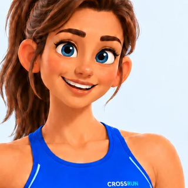
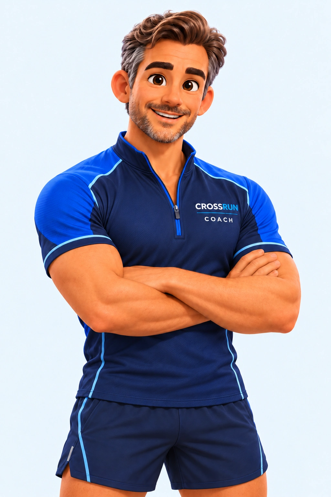
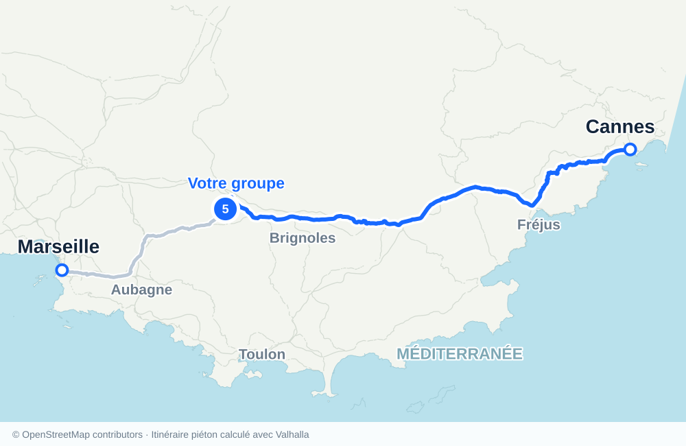

Tu enregistres ta sortie
Lance une course GPS ou synchronise une activité. Pendant la bêta, tu peux aussi importer un parcours GPX.
LE RÉSEAU DES RUNNERS QUI SE CROISENT
CrossRun repère les coureurs avec qui tu as partagé une partie du trajet. Après ta sortie, envoie un Wave si tu en as envie ; l’échange s’ouvre seulement si l’autre personne accepte aussi.
Tu gardes la main sur ta visibilité et tes échanges.
Bêta iPhone et Android · 18 ans et plus · Gratuite


1 km partagéDeux parcours. Un moment en commun.Après la courseLE PRINCIPE
Tu cours à ton rythme. CrossRun repère simplement les kilomètres partagés.
Lance une course GPS ou synchronise une activité. Pendant la bêta, tu peux aussi importer un parcours GPX.
L’application compare le lieu et l’heure des sorties pour trouver la portion réellement courue ensemble.
Envoie un Wave si tu en as envie. La conversation s’ouvre seulement si l’autre personne accepte aussi.
PARCOURS & GUIDAGE GPS
Depuis le bouton Parcours, choisis comment préparer ta sortie : trouve une boucle, crée ton tracé sur la carte ou importe un fichier GPX.
DANS L’APPLICATION
Garde tes sorties, prépare un objectif et retrouve des runners de ton coin.
Enregistre ta course GPS ou importe une activité compatible, par exemple depuis Apple Santé ou Polar Flow.
Vois la portion partagée et le temps passé sur le même chemin.
Le Wave est une invitation. Tu choisis de répondre ou de passer.
Choisis une distance, ton niveau et tes jours d’entraînement.
Les kilomètres de chacun font avancer le groupe vers le même but.
Retrouve tes sorties, tes records et les étapes qui comptent.
Masque les zones près de chez toi et règle qui peut voir ton profil.
TON OBJECTIF, TON COACH
Choisis la distance que tu prépares et organise tes entraînements selon tes disponibilités.

Pour aller plus loin, un cap après l’autre.

Pour construire une routine qui dure.

Pour prendre confiance et garder l’élan.

Pour un cadre clair et des séances régulières.
5 km · 10 km · semi-marathon · marathon
LES DÉFIS DE GROUPE
Choisis un défi commun. Chacun court où il veut, et les kilomètres de tous font progresser l’équipe vers l’arrivée.
Découvrir les défis
TES CHOIX RESTENT LES TIENS
Les parcours sont comparés après la sortie. Tu décides si tu veux envoyer ou accepter un Wave. Le partage temporaire de sécurité pendant une course est une option séparée.
QUESTIONS FRÉQUENTES
Lance une course GPS directement dans CrossRun ou importe une activité compatible. Après la sortie, tu retrouves ton parcours et tes statistiques dans ton historique.
Prépare ton parcours en le trouvant, en le créant sur la carte ou en important un GPX. Pendant ta course, ouvre Guidage GPS pour retrouver le tracé choisi.
L’application compare le lieu et l’heure des sorties enregistrées ou synchronisées, puis calcule la portion parcourue en commun.
Non. Les croisements sont présentés après la sortie. Le partage de sécurité pendant une course est une option différente, activée par toi et temporaire.
Non. Tu peux l’ignorer. Une conversation privée s’ouvre uniquement si les deux personnes acceptent l’échange.
Non. CrossRun est réservé aux personnes âgées de 18 ans et plus.
LA PROCHAINE SORTIE COMMENCE ICI
Les premiers tests sont ouverts sur iPhone et Android, à Cannes et dans les environs.
Bêta gratuite · 18 ans et plus